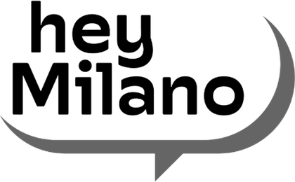

Impegno civile e politico
La parte del mio lavoro che non passa dall’aula: il centro studi, il percorso di assemblee cittadine, la memoria della Resistenza portata nelle scuole.

Circolo e Centro studi «Emilio Caldara»
dal 2023socio dal 2023, consiglio direttivo e comitato scientifico · circolocaldara.it
Il circolo è intitolato a Emilio Caldara, primo sindaco socialista di Milano, e tiene insieme due cose che di solito stanno separate: l’attività di un circolo cittadino e la ricerca di un centro studi. Nel consiglio direttivo e nel comitato scientifico lavoro alla programmazione degli incontri pubblici e alle ricerche sui temi della città. Da lì è nato il mio contributo «Oltre il muro e i frammenti», una diagnosi della disuguaglianza educativa milanese quartiere per quartiere, con un’agenda in cinque priorità: la scuola non come servizio fra i servizi, ma come l’infrastruttura civile che tiene insieme una città divisa.

«Hey Milano»
2026coordinamento del percorso · heymilano.it
Un percorso aperto di assemblee cittadine e di ricerca sulla città, promosso con il Centro studi Caldara e culminato in un congresso. Coordino il percorso e curo la parte di ricerca e di scrittura: il rapporto Hey Milano, come stai? e i contributi che ne sono seguiti. L’idea è semplice e difficile da praticare: prima ascoltare la città quartiere per quartiere, poi scriverne, poi discuterne in pubblico.

La memoria della Resistenza, nelle scuole
in corsoFIVL, Federazione Italiana Volontari della Libertà · fivl.eu
Sono il referente per le scuole della FIVL: coordino i progetti didattici e di public history rivolti agli istituti, dal percorso sui quindici martiri di Piazzale Loreto ai podcast di Storie che curano per gli ottantesimi anniversari. Intervengo in pubblico sulla memoria della Resistenza e sulla cultura democratica, comprese le celebrazioni milanesi del 25 aprile. Il lavoro sui documenti – le Fiamme Verdi, «il ribelle», i fascicoli d’archivio – e quello con le classi sono la stessa cosa vista da due lati.
Le cose che ho costruito lavorando con queste associazioni stanno nella pagina di public history: «Mai più Piazza Fontana», il progetto per le scuole nato al Caldara; i XV Martiri di Piazzale Loreto; le Fiamme Verdi di Brescia e «il ribelle», fatti per la FIVL; la Scuola di Cittadinanza Europea.